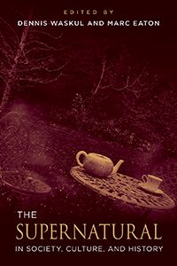

<body bgcolor="#FFFFFF" text="#000000" link="#0000FF" vlink="#CC0000" alink="#CC0000"><center><hr width="350" size="1" align="center" noshade>Demonstrating the value of serious academic inquiry into supernatural beliefs and practices-from ghosts, vampirism, cryptozoology, and dark tourism to tarot cards, fortunetelling, voodoo, and alien abduction<hr width="350" size="1" align="center" noshade><p><a href="https://cdcshoppingcart.uchicago.edu/Cart/ChicagoBook.aspx?ISBN=&&PRESS=temple" target="_top">Buy this book!</a> | <a href="https://cdcshoppingcart.uchicago.edu/Cart/Cart.aspx?PRESS=temple" target="_top">View Cart</a> | <a href="https://cdcshoppingcart.uchicago.edu/Cart/Cart.aspx?PRESS=temple" target="_top">Check Out</a></p><p></p></center><!--none//--><h1 class = "booktitle">The Supernatural in Society, Culture, and History</h1>
<h3>Edited by Dennis Waskul and Marc Eaton </h3>
paper: $34.95, Jul 18<BR>EAN:&nbsp;978-1-4399-1525-7<BR><font color=#990033>Not Yet Published Preorder</FONT><font size=-7><br>&nbsp;</font></p><p class="info">cloth: $99.50, Jul 18<BR>EAN:&nbsp;978-1-4399-1524-0<BR><font color=#990033>Not Yet Published Preorder</FONT><font size=-7><br>&nbsp;</font></p><p class="info">e-book: $34.95, Jul 18<BR>EAN:&nbsp;978-1-4399-1526-4<BR><font color=#990033>Not Yet Published Preorder</FONT><font size=-7><br>&nbsp;</font></p></p></td></tr></table>
<BR> <p class="info">262 pp<BR> 6 x 9<BR> 13 halftones <p class="info"><font size=-7>&nbsp;</font></p><p class="info">
</P><BLOCKQUOTE></BLOCKQUOTE>
<p>In the twenty-first century, as in centuries past, stories of the supernatural thrill and terrify us. But despite their popularity, scholars often dismiss such beliefs in the uncanny as inconsequential, or even embarrassing. The editors and contributors to <i>The Supernatural in Society, Culture, and History </i>have made a concerted effort to understand encounters with ghosts and the supernatural that have remain present and flourished. Featuring folkloric researchers examining the cultural value of such beliefs and practices, sociologists who acknowledge the social and historical value of the supernatural, and enthusiasts of the mystical and uncanny, this volume includes a variety of experts and interested observers using first-hand ethnographic experiences and historical records. <i>The Supernatural in Society, Culture, and History</i> seeks to understand the socio-cultural and socio-historical contexts of the supernatural. This volume takes the supernatural <i>as real</i> because belief in it has fundamentally shaped human history. It continues to inform people's interpretations, actions, and identities on a daily basis. The supernatural is an indelible part of our social world that deserves sincere scholarly attention. <i>Contributors include: </i><i>Janet Baldwin, I'Nasah Crockett, William Ryan Force, Rachael Ironside, Tea Krulos, Joseph Laycock, </i><b><i>Stephen L. Muzzatti, </i></b><i>Scott Scribner, Emma Smith, </i><i>Jeannie Banks Thomas, and the editors</i><br>
<P CLASS="top"><A HREF="#top">BACK TO TOP</A></P>&nbsp;
<BR>&nbsp;
&nbsp;<P>
</P><BR>&nbsp;
<H2 class="inpageheading"><A NAME="author bio"></a>About the Author(s)</H2><p><b>Dennis Waskul</b> is a Professor of Sociology and Distinguished Faculty Scholar at Minnesota State University, Mankato, and former president of the Society for the Study of Symbolic Interaction. He has authored, co-authored, or edited a variety of books, including <i>Ghostly Encounters: The Hauntings of Everyday Life </i>(with Michele Waskul); <i>Body/Embodiment </i>(with Phillip Vannini); <i> The Senses in Self, Society, and Culture </i>(with Phillip Vannini and Simon Gottschalk); and <i>Popular Culture as Everyday Life</i> (edited with Phillip Vannini).<br>
<p><b>Marc Eaton</b> is an Associate Professor of Sociology at Ripon College, in Wisconsin.<br>
<P CLASS="top"><A HREF="#top">BACK TO TOP</A></P>
<p><h2 class="inpageheading"><a name="subjects"></a>Subject Categories</h2> <p><a href="http://www.temple.edu/tempress/sociology.html" target="_top">Sociology</a> <br><a href="http://www.temple.edu/tempress/anthropology.html" target="_top">Anthropology</a> <br><a href="" target="_top"></a> <br><a href="" target="_top"></a> <br><a href="" target="_top"></a> </p>
</p>
<P>
</P>
<p align="center"><a href="https://cdcshoppingcart.uchicago.edu/Cart/ChicagoBook.aspx?ISBN=&&PRESS=temple" target="_top">Buy this book!</a> | <a href="https://cdcshoppingcart.uchicago.edu/Cart/Cart.aspx?PRESS=temple" target="_top">View Cart</a> | <a href="https://cdcshoppingcart.uchicago.edu/Cart/Cart.aspx?PRESS=temple" target="_top">Check Out</a></p><p><font face="Arial" size="1"><a href="copyright.html" onMouseOver="window.status='Web Copyright Policy';return true;" onMouseOut="window.status=''" title="Web Copyright Policy">&copy;</a> 2018 <a href="http://www.temple.edu" target="new" onMouseOver="window.status='Link to Temple University home page';return true;" onMouseOut="window.status=''" title="Link to Temple University home page">Temple University</a>. All Rights Reserved. http://www.temple.edu/tempress/titles/2466_reg.html</font></p>